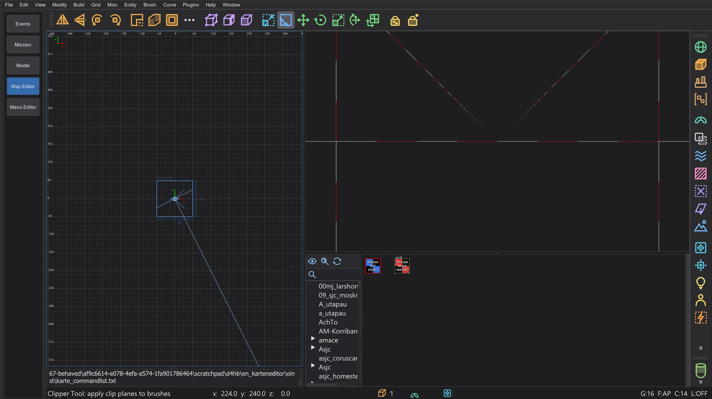
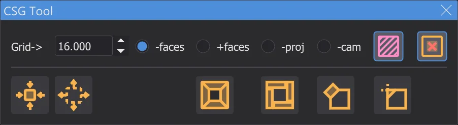
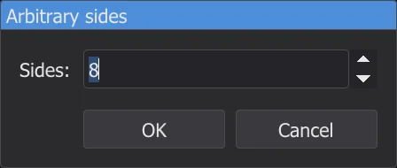
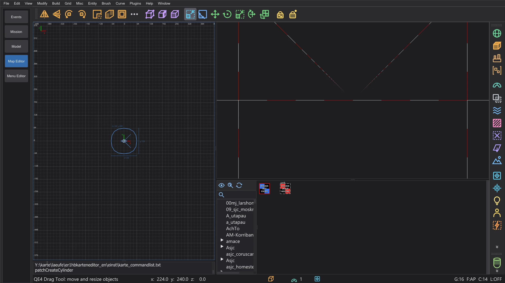
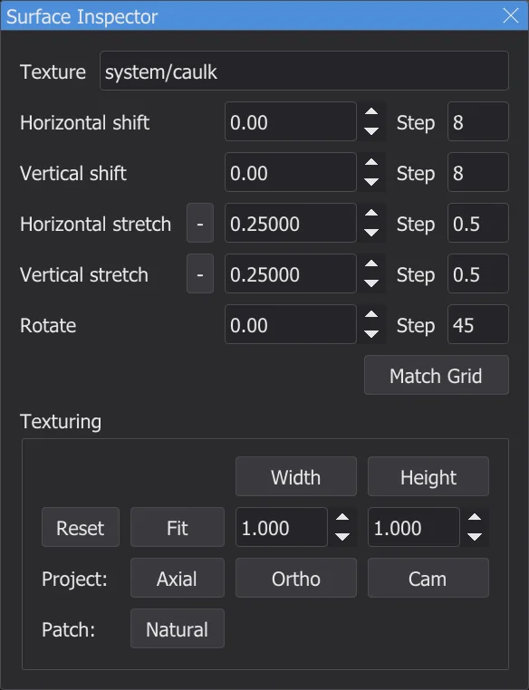
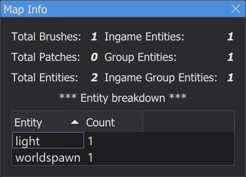
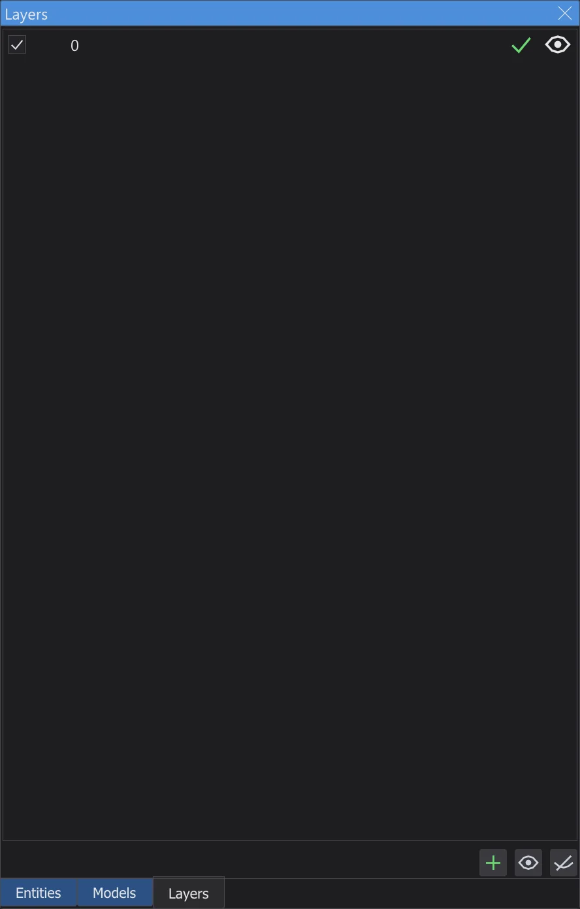
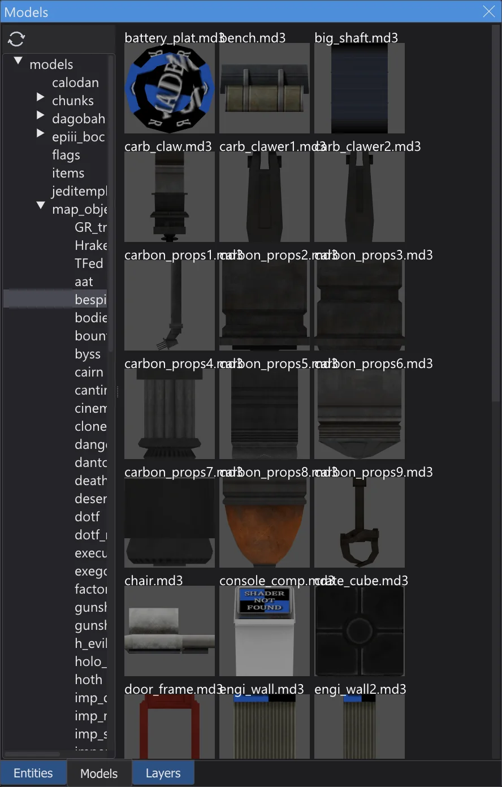
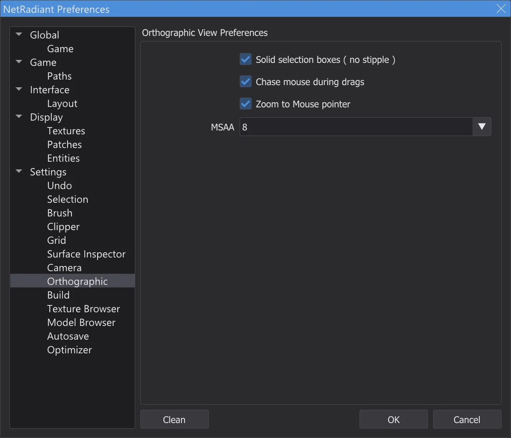
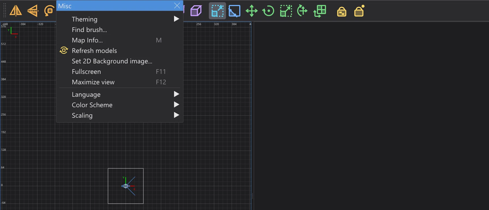

Editor map: stavební nástroje
Vrcholy, hrany a stěny, ořezávač, CSG, tvary brushů, transformace, patche, texturování, oblasti, filtry, vrstvy a modely - nástroje NetRadiant-Custom s jeho klávesami, nabídkami a dialogy.
Vrcholy, hrany a stěny#
Vyberte brush nebo patch a stiskněte V (vrcholy), E (hrany) nebo F (stěny). Kliknutím na bod ho vyberete, tažením měníte tvar brushe; brush se z bodů znovu sestaví jako v NetRadiant-Custom. Stejná klávesa znovu vrátí běžný výběr. B je stavební nástroj (vytažení, stavba řetězů, klonování), G nástroj UV pro texturu stěny. Texture Lock (Shift+T) drží textury na místě, když posouváte brushe.
Ořezávač#

Picture still in EnglishVyberte brushe a stiskněte X. Klikněte až na tři body ve 2D pohledu nebo na povrchy v kameře a určíte rovinu řezu; tažením bodů je opravíte. Enter ořízne a ponechá jednu stranu, Shift+Enter rozdělí na obě poloviny, Ctrl+Enter obrátí, která strana zůstane. Dvojklik ořízne nebo rozdělí podle nastavení na stránce předvoleb Ořezávač.
CSG#

Picture still in EnglishBrush > CSG: CSG Subtract (Shift+U) vyřízne vybrané brushe ze všeho, čeho se dotýkají, CSG Merge spojí brushe do jednoho konvexního brushe, CSG Wrap Merge (Ctrl+U) je obalí jedním, CSG Intersect (Ctrl+Shift+U) ponechá jen společnou část, Make Room udělá z brushe dutou místnost. Make detail (Alt+D) a Make structural (Alt+S) nastavují příznak detailu.
Tvary brushů a transformace#

Picture still in EnglishBrush změní vybraný brush na Prism, Cone, Sphere, Rock nebo Icosahedron; malý dialog se zeptá na počet stran. Ctrl+3 ... 9 vytvoří hranol s tolika stranami kolem osy aktivního 2D pohledu. Modify otáčí a zrcadlí výběr kolem jeho středu, Arbitrary rotation (Shift+R) a Arbitrary scale (Ctrl+Shift+S) berou přesné hodnoty. Repeat Transforms (Ctrl+R) zopakuje poslední posun, otočení nebo změnu měřítka, Reset Transforms (Alt+R) ji zapomene.
Patche#

Picture still in EnglishNabídka Curve staví patche v rozměrech výběru: rovinu (Simple Patch Mesh, Shift+P), zkosení, koncovou čepičku, válce, kužel, kouli a přesné verze s dialogem velikosti. Insert/Delete přidává nebo odebírá řádky a sloupce, Matrix obrací (Ctrl+I), transponuje (Ctrl+Shift+M), znovu rozkládá a vyhlazuje. Cap Selection (Shift+C) uzavře konce, Thicken (Ctrl+T) dá patchi tloušťku, Deform přidá šum. Textura patche: Naturalize (Ctrl+N), obrácení X a Y, obnovení.
Texturování#

Picture still in EnglishInspektor povrchu (S) ukazuje texturu vybraných stěn: posun, měřítko a otočení, velikosti kroků pro šipky, přizpůsobení (Ctrl+F) a projekci (osová, orto, z kamery). Bez okna posouvá Shift + šipky texturu, Ctrl + šipky mění měřítko, Shift+PgUp / PgDn ji otáčejí. Select Textured (Ctrl+Shift+A) vybere všechny stěny s aktuální texturou. S Tags GUI dostane prohlížeč textur štítky pro třídění textur.
Výběr, oblasti a soubory#

Picture still in EnglishSelect inside a Select touching vyberou, co leží uvnitř vybraného brushe nebo se ho dotýká. View > Region ukáže jen část mapy: Set XY (viditelná oblast 2D pohledu), Set Brush, Set Selection (Ctrl+Shift+R), Off. File > Save region zapíše oblast se zdmi kolem a startem hráče, Save selected jen výběr, Import přidá jinou mapu. Find brush vybere brush podle čísla entity a brushe. Mapa se automaticky ukládá každých 15 minut (stránka předvoleb Automatické ukládání).
Filtry#
View > Filter a lišta filtrů vpravo skrývají druhy objektů: brushe světa (Alt+1), entity, caulk, clipy, kapaliny, detailní brushe, patche, světla, modely, triggery a další. Některá tlačítka dělají při pravém kliknutí něco jiného, jak říká jejich popisek: udělat výběr detailním nebo strukturálním, vytvořit func_group, dát na něj caulk nebo nástrojovou texturu. Invert filters a Reset filters je všechny obrátí nebo vypnou.
Vrstvy#

Picture still in EnglishVrstvy seskupují části mapy. V Layers Browser (L) vytváříte a přejmenováváte vrstvy, vnořujete je tažením, skrýváte nebo zobrazujete je okem a přesouváte výběr do vrstvy (Shift+Q); Ctrl+Q rozšíří výběr na jeho vrstvy. Nové objekty jdou do aktuální vrstvy. Vrstvy se ukládají do souboru .map jako v NetRadiant-Custom.
Modely#

Picture still in EnglishEntity jako misc_model ukazují svůj model (.md3, .glm, .ase) v obou pohledech, se skinem, modelscale a úhly. V Model Browser (/) dvojklik na složku načte její modely; kliknutí na model ho dá vybraným entitám, dvojklik vloží nový misc_model před kameru. Refresh models znovu načte modely po jejich změně.
Předvolby#

Picture still in EnglishFungují všechny stránky předvoleb NetRadiant-Custom: Brush (výchozí měřítko textur, typ brushů nových map, vždy caulk), Mřížka, Zpět, Ortografický (plný nebo tečkovaný výběr, sledovat myš u okraje při tažení, přibližovat k ukazateli myši), Sestavení, Nastavení (postrčit po duplikaci, načíst poslední mapu). V Hra zvolíte Jedi Academy nebo Jedi Outcast, mod a režim mapování (entity pro jednoho nebo více hráčů), v Cesty složku hry a až pět dalších složek. Volba jiné hry si vyžádá restart editoru map, jako v NetRadiant-Custom.
Nabídky a okna#

Picture still in EnglishKliknutí na přerušovanou čáru nahoře v nabídce ji odtrhne do okna, které zůstane otevřené (Odpojitelné nabídky na stránce Rozvržení). Misc > Fullscreen (F11) vyplní obrazovku, Maximize view (F12) zvětší pohled pod myší. OpenGL Font volí písmo 2D pohledů a kamery, Set 2D Background image vloží obrázek do rozměrů výběru v aktivním 2D pohledu, pro obkreslování. Pluginy popisuje Editor map: pluginy, kompilaci pomocí q3map2 Editor map: kompilace mapy.